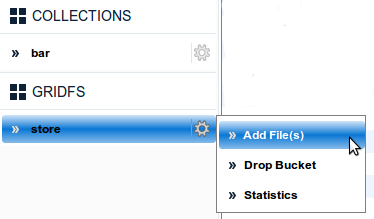
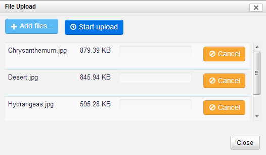
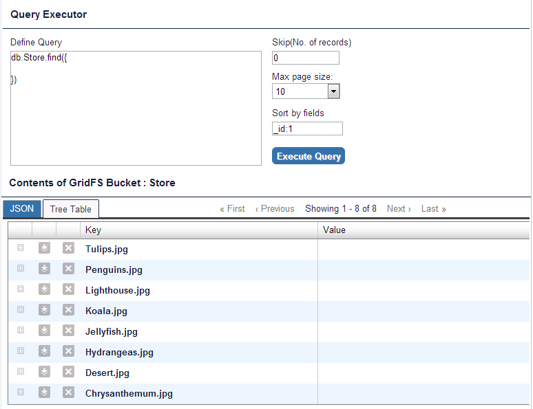

GridFS bucket > Add File(s)
- Hover over the GridFS Bucket name.
- Click Add File(s). See Figure below.

An upload dialog box displays.
- In the Upload dialog box, click Add Files to select the files to be uploaded.
- Click Start Upload. See Figure below.

 You can cancel a specific file before starting upload by clicking Cancel.
You can cancel a specific file before starting upload by clicking Cancel.
- Click Close once you are done. See figure below.
The system displays confirmation message on the File Upload dialog box.
GridFS bucket > Delete File(s)
- In the File Upload box, click Delete. See figure below.

The file(s) are deleted from the database.
GridFS bucket > View File(s)
- Click the Bucket name. See Figure below.

- You can perform the following actions:
| Functionality |
Description |
| Define Query |
Add selectors/conditions in the query box to filter your results. |
| Skip(No. of records) |
This field allows you to skip the specified number of documents from start. |
| Max page size |
You can update max page size as 25 or 50 to view more documents per page. |
| sort by fields |
Provide a value in the Sort by fields box as shown. |
| open a file |
Click file name in the Tree Table view or alternatively click Open in JSON view. |
| download a file |
- Click the
 icon in the Tree Table view or alternatively click Download in JSON view. icon in the Tree Table view or alternatively click Download in JSON view.
|
| delete a file |
Click the  in the Tree Table view or alternatively click Delete in JSON view. in the Tree Table view or alternatively click Delete in JSON view. |
GridFS bucket > Drop Bucket
- In the GRIDFS side bar, click the Bucket name
- Select Drop Bucket
See Figure below.

The system displays a delete prompt message box. See figure below.

Click Yes
The system displays a confirmation message.
previousnext